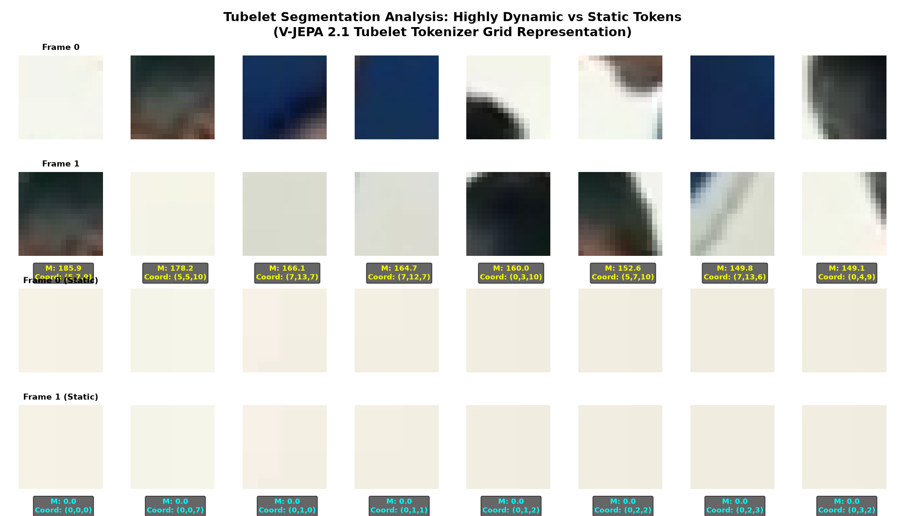
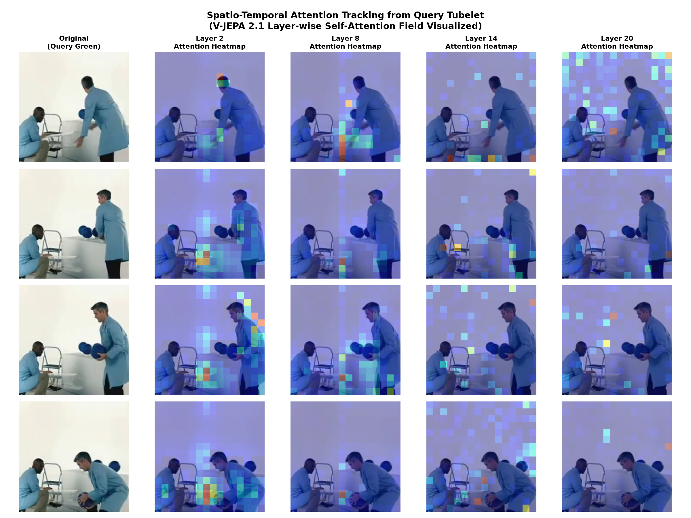

Exploring how V-JEPA 2.1 partitions video spatio-temporal grids into 3D tubelets and tracks attention propagation from high-motion query tokens across transformer depths.
Unlike standard Vision Transformers (ViTs) that treat video frames as independent images, V-JEPA 2.1 utilizes a 3D Tubelet Tokenizer. It maps spatial-temporal cylinders (tubelets) of raw video pixels into distinct token representations.
16 × 16 pixels.2 frames.nn.Conv3d with kernel and stride (2, 16, 16).[16 frames, 256px, 256px] is compressed into 8 × 16 × 16 = 2048 tubelet tokens.
By computing the temporal differences within each tubelet's pixels, we can segment the video into dynamic (moving) tokens and static (background) tokens.
The chart below highlights the top 8 high-motion vs. top 8 low-motion tubelets extracted from sample_video.mp4.

To understand how V-JEPA 2.1 integrates visual structures, we selected a high-motion query tubelet (the bowler's arm region at t=7, y=13, x=7) and tracked where its attention propagates at different layers:
Below is the grid of keyframes (at frames 0, 4, 8, 12) showing the query tubelet (marked in green) and the attention maps (colorbar: Jet) overlaid across layers:
